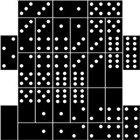

Problem F
Quadrilles
Input: Standard Input
Output: Standard Output
Time Limit: 5 Seconds
A domino is a rectangular tile of size 2x1, where each end has a certain number of dots (between 0 and 6). A standard double-six domino set contains 28 different dominoes, namely precisely all possible combinations of the number of dots on both ends.
A quadrille is a layout of the standard double-six domino set so that they form the following pattern: the layout can be partitioned into 14 2x2 squares such that the number of dots in the 4 tiles in a square are the same. The picture below shows an example of a quadrille.

Given the shape of the layout, determine how many (if any) different quadrilles exist with that shape. Two quadrilles are considered different if one of them is not just a permutation of the number of dots in each (2x2) square (there are, of course, 7! = 5040 such permutations). Note however that two different layouts may yield the same number of dots in each (2x2) square (this is demonstrated by the second sample below). Quadrilles that are horizontal and/or vertical mirrors of each other are considered different.
The first line in the input will contain the number of shapes (no more than 10). The shapes will then be described in 12x8 matrices with the characters 'X' (marking areas which a domino must cover) and '.' (marking areas which should not be covered by a domino) - see the sample input for the exact format. Each shape will be preceeded by a blank line. You may assume that each shape can be partitioned into exactly 14 (2x2) squares.
Output
For each shape, output a single integer on a line by itself: the number of different quadrilles that have this shape.
2 .XXXXXX......XXXXXX.....XXXXXXXX....XXXXXXXX.....XXXXXX......XXXXXX.....XXXXXXXX....XXXXXXXX.... ...XXXXXXXX....XXXXXXXX.....XXXXXX......XXXXXX......XXXXXX......XXXXXX.....XXXXXXXX....XXXXXXXX. |
2136 |
Note sample 1: The two solutions are
horizontal mirrors of each other. ...00112233....00112233.....445500......445500......661166......661166.....22443355....22443355.
|